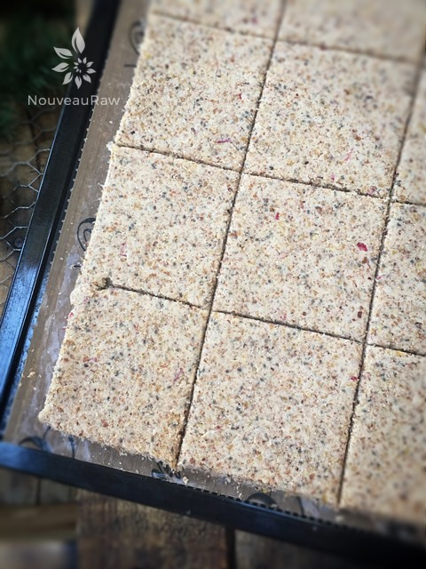
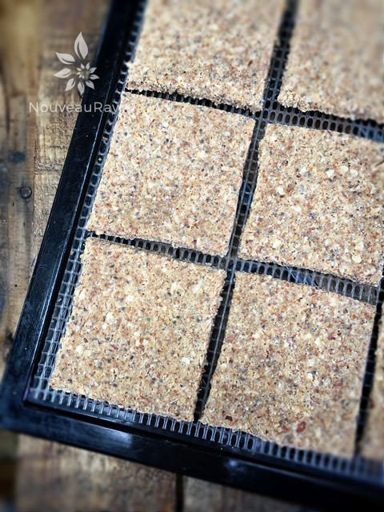
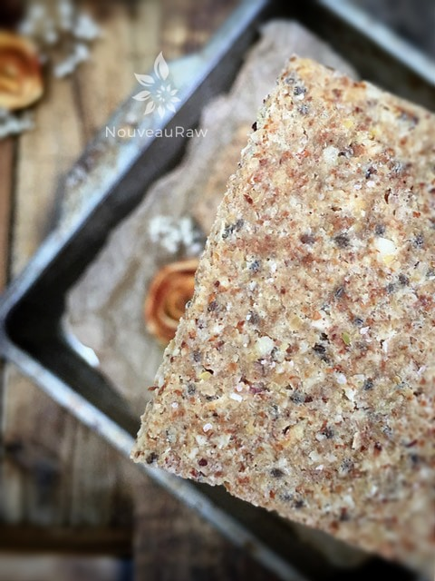
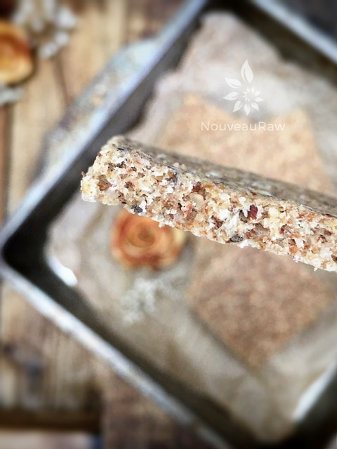

Apple Cinnamon Cracker
~ raw, vegan, gluten-free ~
This cracker, believe it or not, tastes a lot like a graham cracker. It wasn’t my goal when I was creating this recipe but once I taste-tested one after they came out of the dehydrator, I was sweetly surprised.
On top of tasting wonderful, these crackers are very sturdy and have a good snap to them. Make sure that you store them in an airtight container. Should they soften a bit due to picking humidity from the air, just pop them back into the dehydrator to crisp them up.
I took some down to the shop to have Bob try it… He took a bite and left me hanging. I followed him around like a puppy… “Well, what does it taste like to you?” He couldn’t put his finger on it at first, then we had an employee try it… without even asking him he spouted, “Tastes just like a graham cracker.”… Bingo! I got my confirmation.
Sometimes I worry that my taste buds play tricks on me, so I always seek out my taste testers for backup. No recipe gets posted without their approval.
I used almond pulp in this recipe which makes for a wonderful cracker texture. Light, airy, crunchy and sturdy is the best way to describe it. You can use ground nuts if you don’t want to create almond pulp but the texture and flavor will be different.
I will be making these again and again… I hope. My husband laughs at me and says that the only problem with living with an artist in the kitchen is that I rarely remake recipes, cause I am too busy creating new ones. Where he does have a solid point, all he has to do is ask and I will make that man whatever his heart desires. :) Enjoy and many blessings, amie sue
Yields roughly 100 crackers
Preparation:
- After soaking the pecans and almonds, drain and rinse them. If you already have soaked and dehydrated pecans and almonds in the pantry, use those.
- Place the pecans and almonds in the food processor, fitted with the “S” blade, and process until it resembles a small crumble. Place in a large bowl.
- Add the almond pulp to the ground nuts and mix. Set aside.
- In the same food processor bowl combine the apples, flaxseed, almond butter, chia seeds, maple syrup, cinnamon, salt, and stevia. Process until creamy.
- Pour over the nuts and almond pulp and mix together with your hands.
- Spread the cracker batter 1/4″ thick over the teflex sheet that comes with the dehydrator.
- Be careful that you don’t spread the batter too thin or the crackers will break too easily.
- I used 2 Excalibur trays, spreading the batter all the way to the edges.
- Score the crackers and dehydrate at 145 degrees (F) for 1 hour, then reduce to 115 (F) degrees for 6-8 hours.
- When dry enough, flip them over onto the mesh sheet and continue drying for another 6-8 hours or until completely dry.
- Store in an airtight container for 1-2 weeks, longer in the freezer.
The Institute of Culinary Ingredients™
- To learn more about maple syrup by clicking (here).
- Click (here) to learn why I use stevia.
- Why do I specify Ceylon cinnamon? Click (here) to learn why.
- What is Himalayan pink salt and does it really matter? Click (here) to read more about it.
- Learn how to make your own raw almond butter by clicking (here).
- Learn how to grind your own flaxseeds for ultimate freshness and nutrition. Click (here).
Culinary Explanations:
- Why do I start the dehydrator at 145 degrees (F)? Click (here) to learn the reason behind this.
- When working with fresh ingredients it is important to taste test as you build a recipe. Learn why (here).
- Don’t own a dehydrator? Learn how to use your oven (here). I do however truly believe that it is a worthwhile investment. Click (here) to learn what I use.

After spreading the batter nice and even, I scored it into the cracker shapes and slid it into the dehydrator to dry. Below, is the photo of what it looks like right out of the dehydrator.


Here we go… a close-up shot. I always feel that these photos help so you know what the end product looks like. Below, I did my best to capture a side view so you can witness the thickness of the cracker.

© AmieSue.com